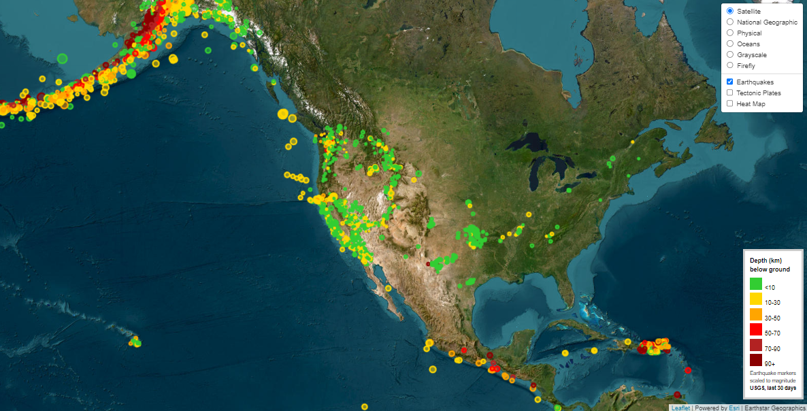
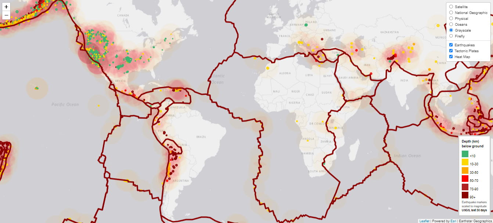
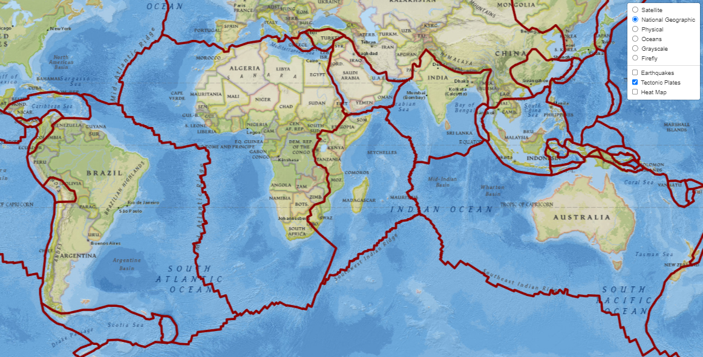

This project uses Leaflet.js and D3.js to create an interactive JavaScript map displaying global earthquake data from the USGS, updated in real time, with features like a heatmap and tectonic plate boundaries. It effectively communicates seismic activity to drive public awareness and support for geological research.
Project Links
Project Overview
In this project, I developed an interactive earthquake map using JavaScript to visualize data from the last 30 days, updated every minute, using a GeoJSON API provided by the United States Geological Survey (USGS). The primary goal was to create an informative and dynamic tool that could be used to educate the public and government organizations on the critical issues of earthquake activity and its correlation with tectonic plates.
To achieve this, I utilized the Leaflet.js library for mapping and D3.js for data manipulation and visualization. The map displays earthquake occurrences across the globe, with various data layers added to illustrate the relationship between earthquakes and tectonic plates. Users can interact with the map to view detailed information about each earthquake, including its magnitude, depth, and location. The map also features a heatmap layer to visually emphasize regions with higher earthquake activity, as well as fault lines to show the boundaries of tectonic plates.
This project highlights my ability to integrate multiple data sources and visualization techniques into a cohesive, user-friendly interface. By effectively communicating complex scientific data through interactive visualizations, this tool can help drive awareness and funding for crucial geological research.
Gallery
 Earthquake Markers
 Tectonic Plates Layer with Heat Map and Earthquake Markers
 Tectonic Plates Layer
References
Dataset created by the United States Geological Survey.